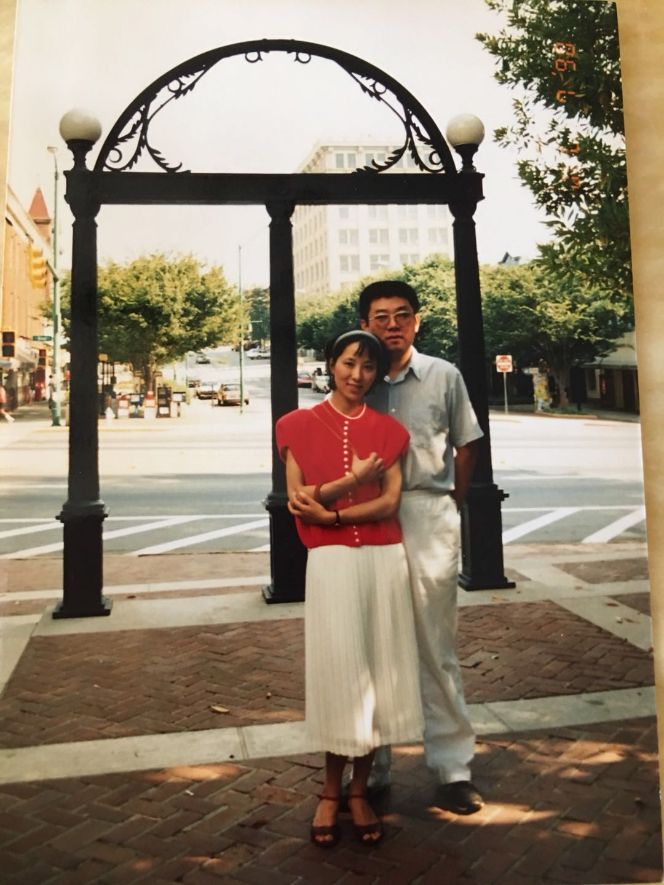
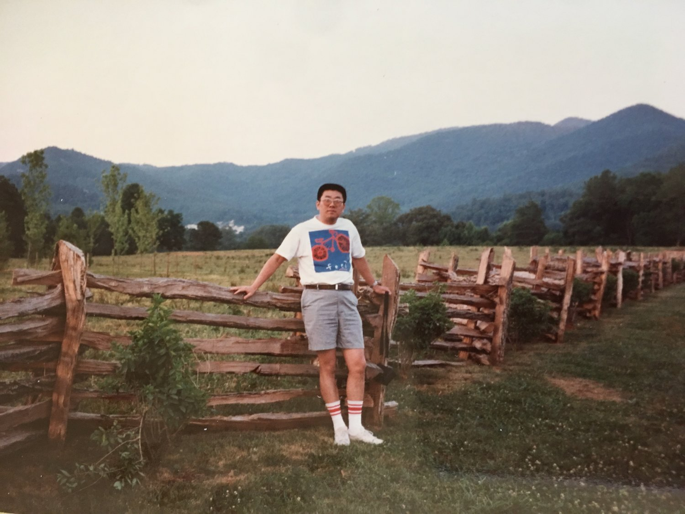
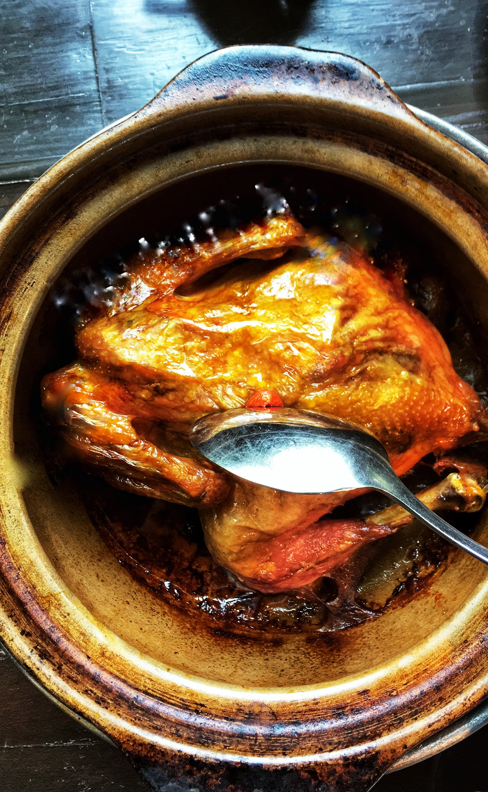
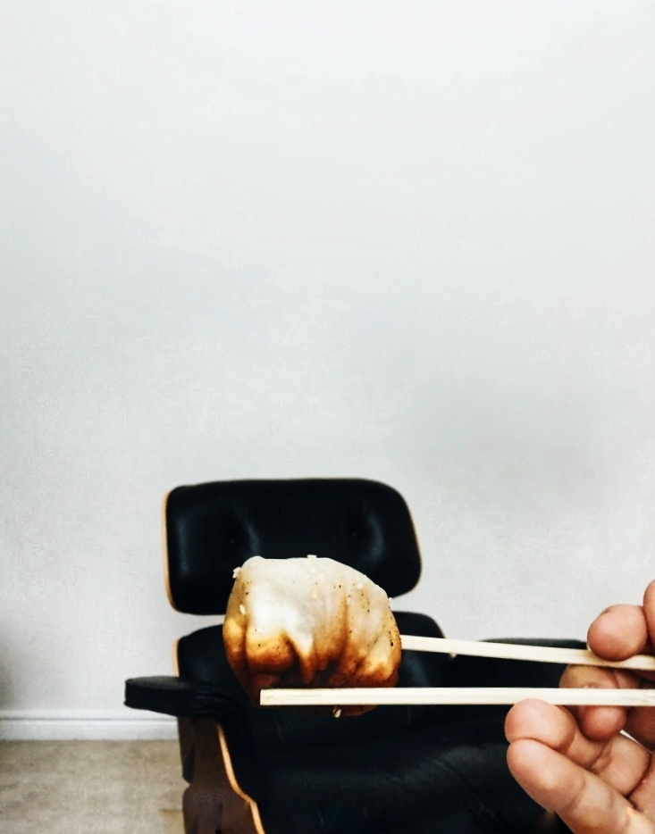
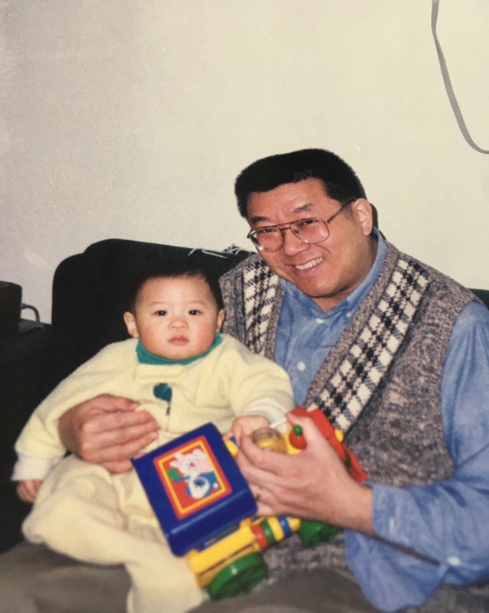
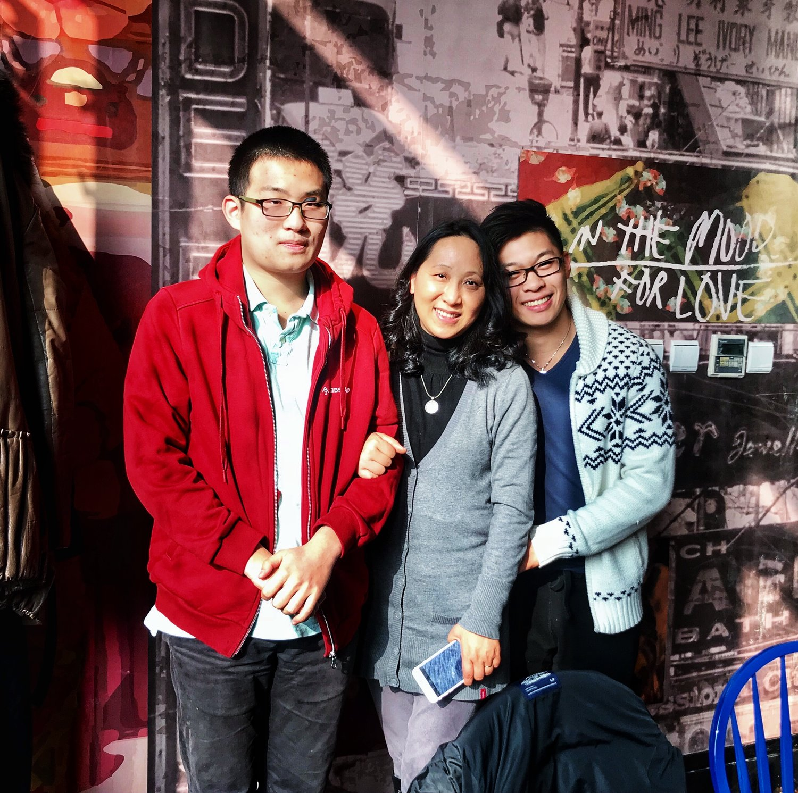

Food, The Glue That Held My Family Together
OCTOBER 04, 2018
Concept: Inspiration
To kick off this week’s concept, Inspiration, I’m going back to trace my roots. I figured that, ultimately, if I’m going to look for some place for inspiration, why not start with the people I’ve looked up to from the very beginning.
I realize that, despite being almost a year into Brad & Butter, I have yet to introduce the rest of my family to everyone. My immediate family consists of my mom Yan, my dad Shimin, and my brother Alan. Since I’m especially close with my grandparents on my mother’s side, I’m throwing them in the mix as well.
My Story, Your Story, Our Story
Everybody has a story. My family began to drill our story in my head ever since I was young to rightfully broaden my perspective on life. However, it definitely wasn’t until after graduating high school did I begin to realize that not only is my family’s story a well of inspiration, but also that I had been drawing from that well all along.
Our story really began to develop when my parents decided to immigrate to the United States from China in search for a better opportunity, for a better life. My parents would always tell me how back in the day, especially in China, choice wasn’t a luxury they could afford. What had to be done, aka making money to sustain the family, simply had to be done.
When my parents moved halfway across the globe to pursue higher degrees, my father in Accounting, and my mother in Nursing, the very first obstacle they had to overcome was the language barrier. Not only did they have to study laboriously to earn their degrees, but they also had to do so with little to no initial comprehension of the material.
Of course, with time, their language comprehension and knowledge improved drastically, and they were able to achieve goals little people from China had the opportunity to even dream of.
How Food Held My Family Together
Food was, and still is, a way out for my family. For a family that argues so much, we are surprisingly harmonious at the table. No matter how severe our conflict runs, in the end, everything is solved with food present. I clearly remember the times my parents and I had a major fight. Almost every time, I turned to food for comfort and solace. Intrigued by this trend in my family, I set out to find answers. Out of everything, why food?
To tie things back to my family’s story, food took on a larger role for my parents than mere sustenance during their early years in the U.S. When my parents immigrated, they were flabbergasted by the options and choices, which at that time were no where near as extensive as they are today. For them, this meant the world. Coming from a place where choice was so limited, my parents thrived in this new environment. They raved over the concept of a buffet and engrossed themselves in these newfound experiences.
Food was a way for my parents to look forward and to keep looking forward: A way to temporarily forget their hardships and to remember why they made the choice to become U.S. citizens. Gradually, food also became the medium for the many friendships my parents still hold today. Thus, it was no surprise that as a child, I had always dreamed of being a chef. While that dream has changed drastically today, my desire to immerse myself in food and everything related to food has stayed constant.
My love, emotional connection, and borderline obsession for food comes not from my life experiences, but from my blood…from my parents. The inspiration that I’m constantly on the lookout for is wired into my genetics. I never had to look anywhere else because all along, my parents had given it to me the moment I took my first breath.
A Note to the Founders
Mom, Dad, Alan. I’ve always felt like I never truly appreciated the struggles and hardships you all went through during this time. I’ve always been one to disagree with my parents, perhaps as a result of cultural and age differences. Regardless, if you’re reading this, and I really hope you are, I want you to know that you mean the world to me.
You all know that I have always been an emotional person. I’ve always been one to let my emotions rule over rational decision. Usually, that’s never a good thing. But today, I want you to let me let go. The past two years at college have not been the best years of my life thus far. That is no secret to you. But knowing that one day, I’ll be able to walk in the door and smell the fresh aromas of your cooking and enjoy food at the same table is what has kept me going all this time.
Everything I write on this website, my pride & joy, is a function of your resilience, your dedication, but most importantly, your love. Nothing would have been possible without you. Without you, I could never have been this inspired.
Love,
Bradley
Meet the brad behind the butter...
Hello and welcome to you new home! I'm Bradley, a junior Hotelie, a self-taught baker, bartender, and a flatlay freak. Here on Brad & Butter, I bake, shake, style, and snap tot tell inspiring stories. This blog is a manifestation of all the things in life at have inspired me to act upon something. And in turn, I hope that whatever I wrtie, bake, or shake can inspire other people. Click here to learn about me...
Read Moreeat pretty
drink pretty
sing pretty
live pretty
you are pretty
recent posts


leave a reply